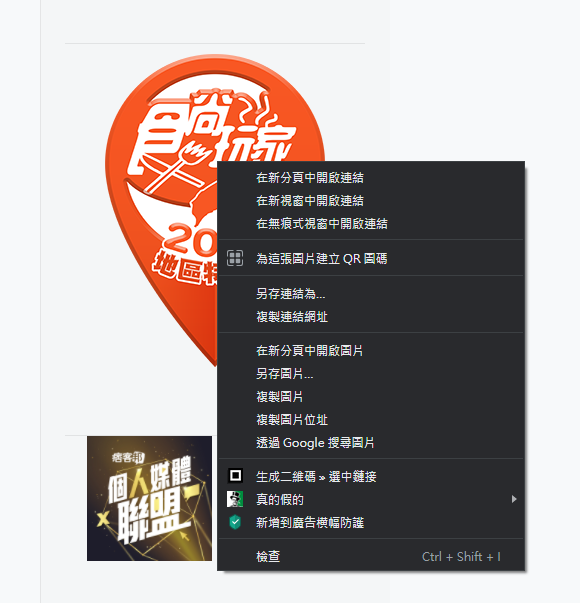
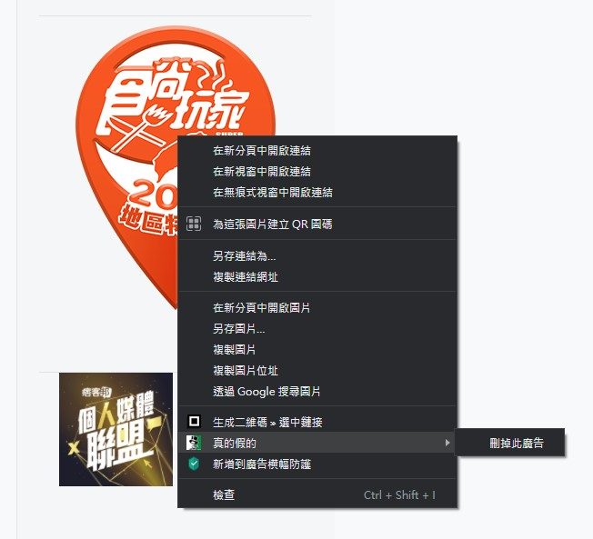
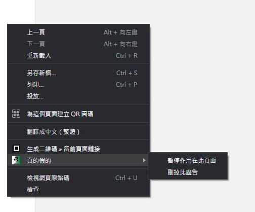
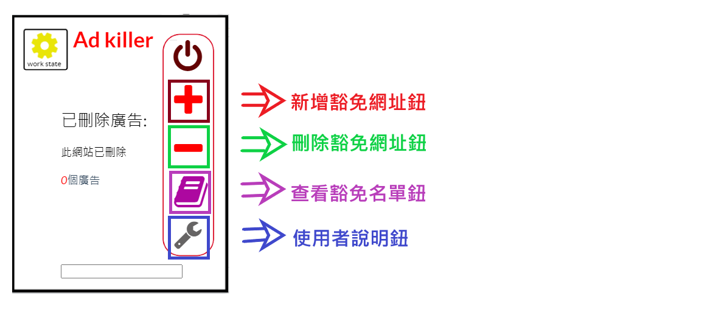
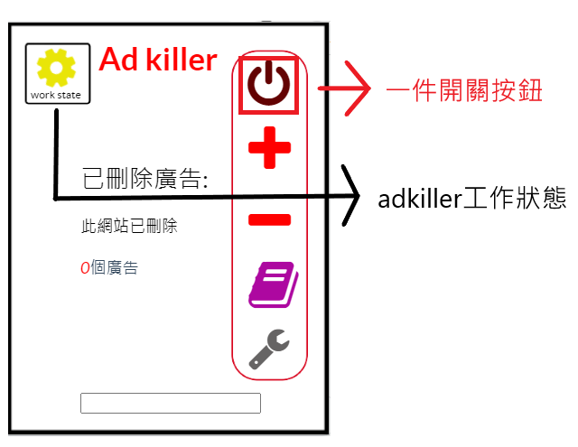

當在瀏覽網站時是否為了關閉許多廣告而感到頭痛，現今網頁上充斥著許多廣告，當您在瀏覽器的收尋引擎上收尋相關關鍵詞，而後在其他網頁上瀏覽時，周圍便會跑出相關關鍵詞的廣告、彈窗廣告、開屏廣告等，有時廣告數量太多，有時廣告面積占據整個版面，當要手動關閉廣告時要等個數秒鐘關閉鍵才會顯示，雖然商家們利用大數據的分析預測適時的推廣自家商品，但在各式各樣的廣告推播下造成了畫面雜亂及騷擾等負面效果，進而引響上網品質，因此設計出ADkiller的擴充元件來阻擋各種廣告的騷擾進而提升上網時的品質。
1.內建資料庫阻擋
在設計此擴充軟體前已預先加載廣告網址及連結，資料庫中存在許多廣告的網址，進而阻擋大部份的廣告，但仍有不存在於資料庫中的廣告連結及網址需手動輸入來新增
2.可手動刪除廣告
在需要刪除的廣告上點擊右鍵，點選真的假的 → 刪掉此廣告，即可手動刪除廣告
於網站頁面點擊右鍵，暫停作用在此頁面，也可新增不須阻擋的網頁網址到豁免名單中



3.可 新增 / 刪除 / 查看 豁免名單
左鍵點擊擴充選項列中黑人牙膏的圖標 → 豁免名單(新增+/刪除-) or 查看豁免名單
1.於UI介面輸入欄中輸入網址點擊新增鈕，可新增不須阻擋的網頁網址
2.於UI介面輸入欄中輸入網址點擊刪除鈕，可刪除不須要阻擋的網頁網址
3.於UI介面點擊查看豁免名單鈕時跳出新視窗顯示，可以了解那些廣告網址位於豁免名單中
4.於UI介面點擊使用者說明鈕，跳出新視窗顯示ADKiller使用者說明網頁

4.支援一鍵開關ADkiller
網頁右上角的擴充選項列中左鍵點擊黑人牙膏，彈出UI介面視窗中點擊開關選項，即可一鍵開啟或關閉ADkiller功能
